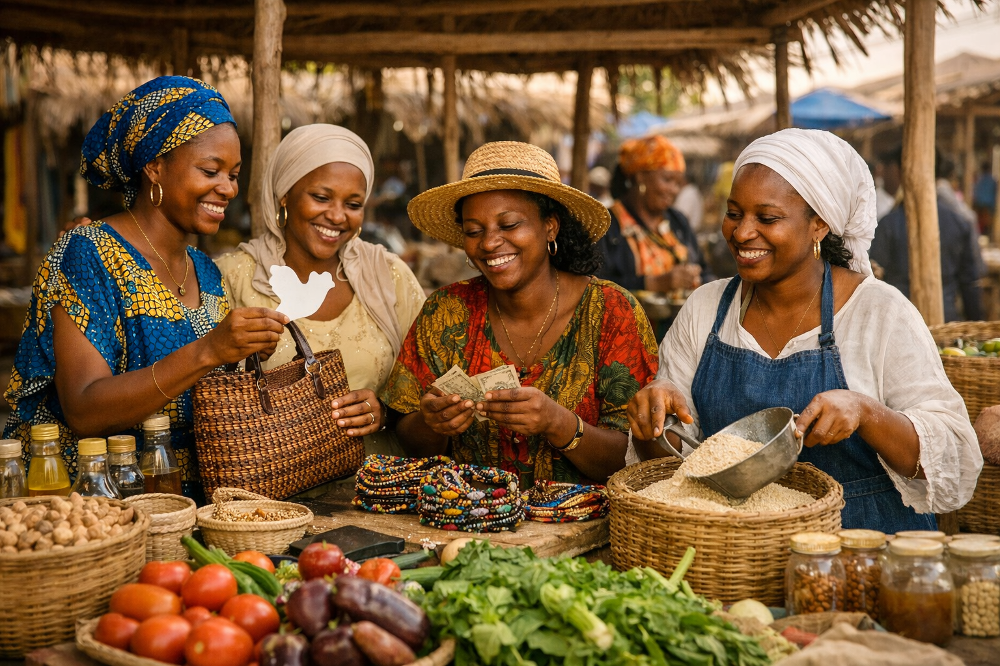

Le projet d’autonomisation économique d’AWLN Sénégal vise à renforcer les capacités des femmes et des filles à travers des formations pratiques, des ateliers d’entrepreneuriat et des programmes de micro‑financement.
L’objectif est de favoriser l’indépendance financière des femmes, de soutenir leurs initiatives locales et de créer des opportunités durables dans les communautés rurales et urbaines.
Ce projet est mené en partenariat avec des institutions financières et des ONG locales, et contribue à améliorer les conditions de vie des bénéficiaires tout en renforçant leur rôle dans le développement économique du pays.